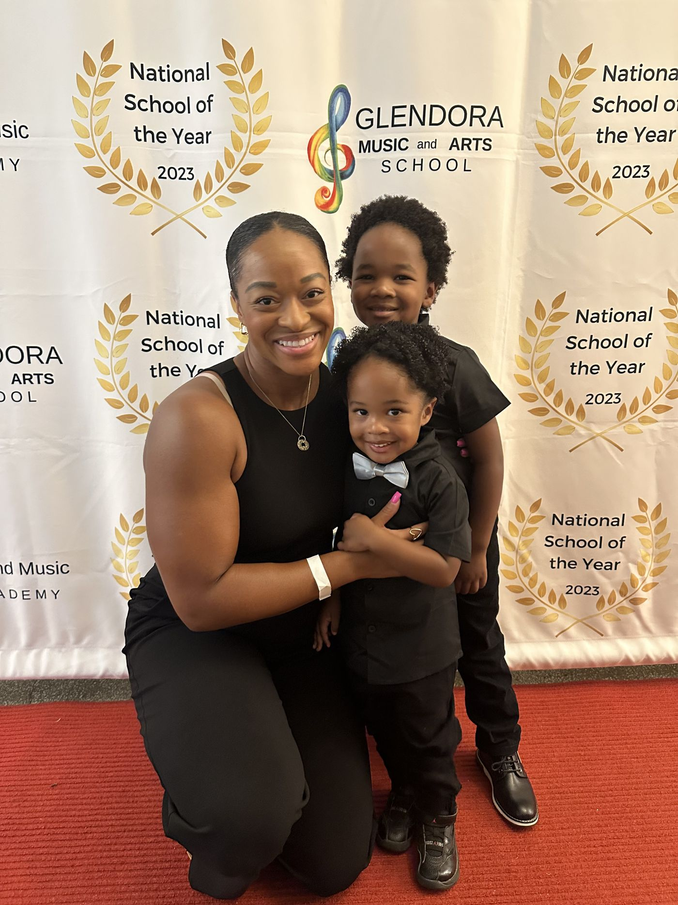
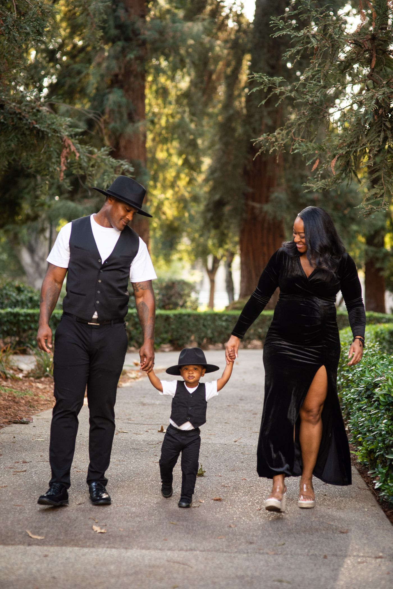
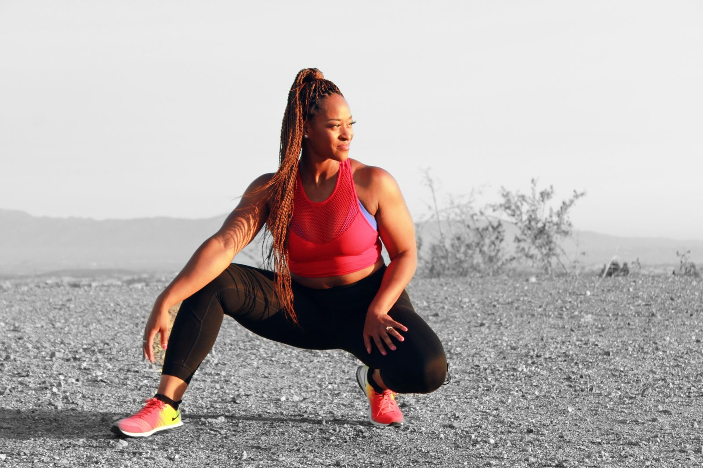
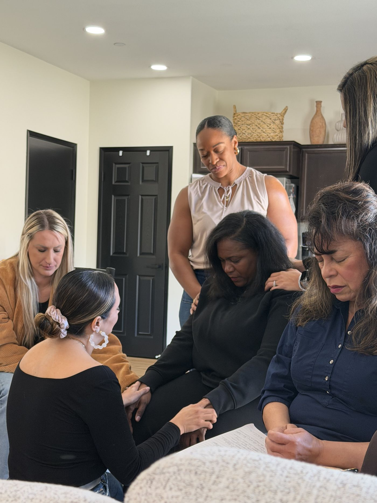
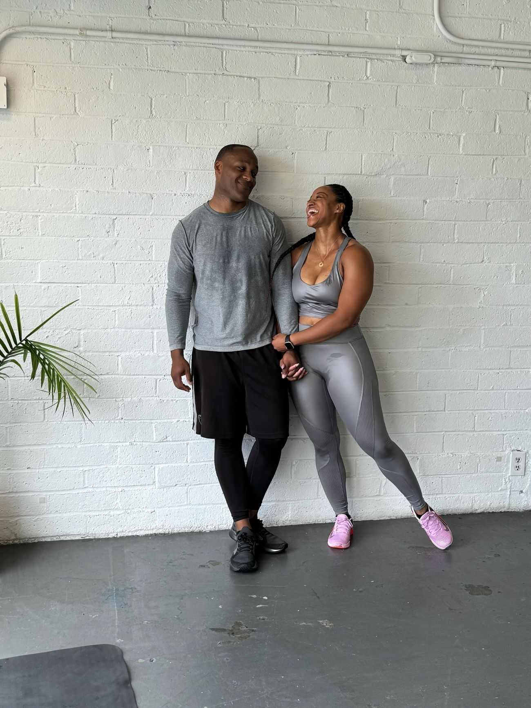

Becoming stronger changed more than my body.
I help women renew their minds, transform their bodies, and redefine their lives. Fitness is part of the transformation, but it is not the entire transformation.
I was my first client.
I started dancing when I was three years old. My body became connected to performance very early. What it could do, how it looked, and how it was perceived were significant parts of my world. I eventually performed professionally and played Nala in The Lion King on Broadway.
Achievement, performance, appearance, attention, and external validation were familiar territory for me.
I’ve spent almost two decades strength training. I competed in a physique competition and learned what it looks like to take discipline and body control to an extreme. I knew how to change my body. What I didn’t understand yet was that changing my body couldn’t answer every question I had about myself.
Then came motherhood, which became one of my greatest reinventions. After my first son I lost around 60 pounds. From the outside, that should have been the victory. I had lost the weight. I had gotten my body back.
Except I still felt empty.
Motherhood had changed more than my body. My life changed. My priorities changed. My responsibilities changed. My identity changed. I couldn’t simply lose weight and return to the woman I had been before children.
I didn’t need to get the old Ashley back. I needed to discover who I was becoming.
Those questions became much bigger than fitness. Who am I when I’m not performing? Who am I when nobody is applauding? Who am I if my body changes? Who am I when a season of life requires something different from me?


You can completely transform your body and still not be free.
You can look confident and still need validation. You can be disciplined and still be controlled. You can be physically strong and internally exhausted. You can achieve the thing you thought would finally make you feel whole and discover you’re still searching.
I had to become free from people pleasing, seeking attention, external validation, control, feelings of unworthiness, and an identity that was too deeply connected to my physical body.
Freedom hasn’t meant I stopped caring about fitness, beauty, achievement, or goals. It has meant putting those things in their proper place.
Every version of me contributed something. Dancer. Broadway performer. Fitness professional. Wife. Mother. Entrepreneur. Coach. Speaker. Reinvention doesn’t require rejecting who I used to be. Nothing was wasted. It’s all being used differently in this next season.
To help women renew their minds, transform their bodies, and redefine their lives so they can become free from the mental, physical, emotional, and spiritual distractions keeping them from boldly stepping into who they were created to be.

Three things that shape the work.
Your body deserves care.
But it was never meant to become your identity.
Health should create capacity.
It should support your life, not consume it.
Transformation starts inside.
Lasting change happens when mind, body, identity, and life begin moving in the same direction.

Faith is part of my foundation.
My relationship with God is foundational to who I am and how I understand identity, purpose, stewardship, freedom, and transformation.
My work is open to women from all backgrounds. You do not have to share my faith to be welcomed, supported, or served here.
In faith-centered spaces and events, I speak more directly about God, calling, spiritual wholeness, identity, and freedom.
Ashley Perry Lambert
Ashley Perry Lambert is a Transformation Coach, Speaker, and host of Reinvented with Ashley Perry Lambert. She helps women renew their minds, transform their bodies, and redefine their lives so they can become free from the mental, physical, emotional, and spiritual distractions keeping them from boldly stepping into who they were created to be.
A lifelong performer, Ashley began dancing at three years old and later performed professionally, including playing Nala in The Lion King on Broadway. After nearly two decades of strength training, a physique competition, entrepreneurship, marriage, motherhood, and her own seasons of reinvention, Ashley learned that changing your body cannot answer every question you have about who you are.
Today, her work brings together identity, mindset, strength, health, confidence, purpose, and practical transformation. Ashley believes your body should support your life. Your life should not revolve around your body.
Through coaching, speaking, teaching, and her podcast, Ashley helps women become stronger from the inside out and step more fully into the life they were created to live.

Ready to see yourself differently?
Start where it makes sense for you.